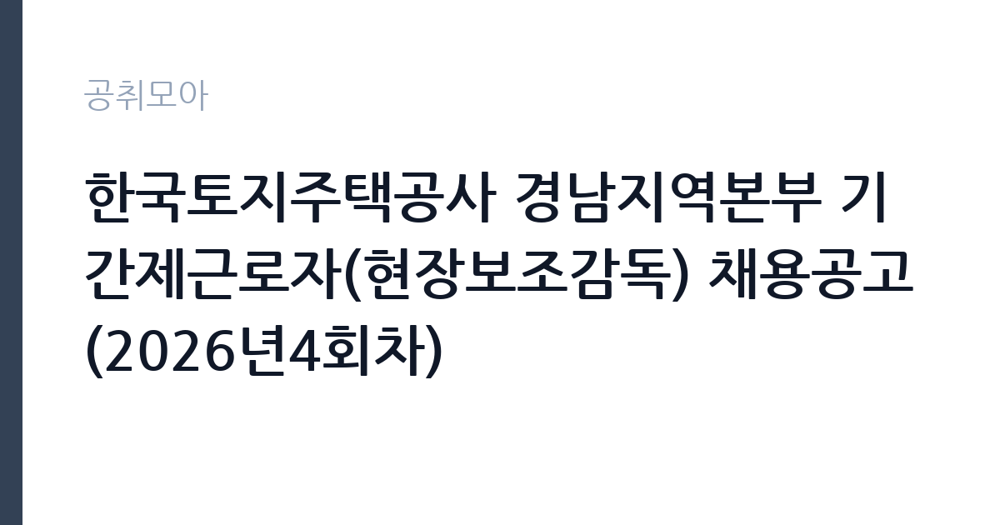

[공공기관] 한국토지주택공사 경남지역본부 기간제근로자(현장보조감독) 채용공고(2026년4회차)
한국토지주택공사 · 경남 · 마감 2026-11-09 (D-15) · 출처 잡알리오

한눈에 보는 모집 조건
| 기관 | 한국토지주택공사 |
|---|---|
| 공고명 | 한국토지주택공사 경남지역본부 기간제근로자(현장보조감독) 채용공고(2026년4회차) |
| 고용형태 | 기간제 |
| 근무지 | 경남 |
| 게시일 | 2026-10-26 |
| 마감일 | 2026-11-09 (D-15) |
지원자격, 이렇게 읽으세요
- 공공기관 채용공시
- 세부 조건은 원문 공고문 확인
요건은 세 갈래로 열려 있습니다. 첫째, 국가기술자격법에 따른 모집 직무분야 산업기사 이상 자격증 소지자. 둘째, 모집 직무분야 관련학과 4년제 대학 졸업자 및 졸업예정자. 셋째, 전력기술관리법 또는 정보통신공사업법에 따른 기술자나 감리원 등급 초급 이상인 자입니다. 여기에 운전면허 2종 보통 이상이 공통으로 붙습니다. 전기 분야 자격이 없어도 관련 학과 4년제 졸업자라면 지원할 수 있다는 점이 이 공고의 가장 큰 특징입니다. 다만 LH 기간제근로자 운영지침에 따라 만 18세 미만과 만 60세 이상은 지원할 수 없고, 현장관리직은 만 65세까지 예외가 적용됩니다.
이 공고의 포인트
이 공고는 세 가지 지점에서 눈여겨볼 만합니다. 첫째, 경력이 아니라 학력이나 자격으로 문을 열어둔 자리입니다. 전기 관련 4년제 학과 졸업예정자도 지원할 수 있어 신입이 도전할 수 있는 드문 LH 기간제 공고입니다. 둘째, 선발 인원이 1명입니다. 서류에서 5명을 뽑고 면접에서 1명을 결정하는 구조라 면접 비중이 절대적입니다. 셋째, 평가 배점이 공개되어 있습니다. 서류는 자기소개 30점, 지원동기 30점, 경험 및 경력 40점에 가점 20점, 면접은 의사소통 30점, 문제해결 40점, 조직적응력 30점입니다. 면접 70점 미만은 과락이라는 점도 반드시 기억해야 합니다.
전형은 어떻게 진행되나
1차 서류전형은 자격 요건 충족자를 대상으로 자기소개 30점, 지원동기 30점, 경험 및 경력 40점에 가점 20점(자격 5, 경력 5, 특별우대 10)을 더해 고득점자 순으로 5명을 선발합니다. 동점자는 전원 합격입니다. 서류 선정자 발표와 면접 안내는 11월 11일 오후 4시 이후 개별 문자로 통보되며, 당일 오후 5시까지 문자가 없으면 경남지역본부 채용 담당자에게 유선 확인해야 합니다. 2차 면접전형은 의사소통 30점, 문제해결 40점, 조직적응력 30점에 특별우대 가점 10점을 더해 평가하고, 70점 미만은 과락 처리합니다. 합격자는 1명, 예비합격자는 3명을 순위 확정으로 선발하며 최종 발표는 11월 16일 오후 4시 이후입니다.
원문에서 확인한 전형 방식
- 현장보조감독(전기) o 한국토지주택공사 인사규정 제9조(채용금지) 및 기간제근로자 운영지침 제15조(채용금지)에 해당되지 아니한 자 o 운전면허(2종 보통 이상) 자격증 소지자로서, 공고일 현재 아래의 자격요건 중 하나를 만족하는 자 1. 「국가기술자격법」에 따른 모집 직무분야 산업기사 이상 자격증 소지자 2. 모집 직무분야 관련학과 4년제 대학 졸업자 및 졸업예정자 3. 「전력기술관리법」 또는 「정보통신공사업법」에 따른 기술자 또는 감리원 등급 ‘초급’ 이상인 자
이런 분께 추천해요
- 전기 관련 4년제 학과 졸업자 또는 졸업예정자
- 전기산업기사 이상 자격을 갖춘 분
- 현장 감독·시공 관리 업무를 시작하려는 분
지원 전 체크리스트
- 전기 분야 자격증 또는 관련 학과 졸업(예정) 증명을 준비했는가
- 운전면허 2종 보통 이상을 보유하고 실제 운전이 가능한가
- CAD·사무자동화 자격증 등 가점 대상 서류를 첨부했는가
- 만 60세 미만 요건을 충족하는가
모집 일정과 제출 타이밍
10월 26일 공고, 11월 9일 접수 마감, 11월 11일 서류 발표, 11월 16일 최종 발표로 전체 일정이 3주 안에 끝납니다. 서류 발표와 면접 사이가 이틀 남짓이라 면접 준비를 접수와 동시에 시작해야 합니다. 졸업예정증명서나 자격증 사본은 학교와 발급 기관을 통해 미리 확보하십시오. CAD와 사무자동화 관련 자격증은 가점 대상이므로 보유하고 있다면 반드시 첨부해야 합니다. 문자 통보가 오지 않을 경우를 대비해 경남지역본부 채용 담당자 연락처를 미리 저장해 두면 좋습니다.
직무 이해하기: 공공기관
현장보조감독(전기)은 LH가 발주하거나 관리하는 현장에서 전기 설비 공사의 진행을 보조 감독하는 일입니다. 시공사가 제출한 시공 계획과 실제 현장 상태를 비교하고, 자재 반입과 시공 품질을 확인해 사진과 기록으로 남깁니다. 전기 설비의 배선과 배관, 수변전 설비, 소방 설비 연동 부분을 점검하고 문제가 발견되면 감독관에게 보고합니다. 공정률에 따라 지급되는 공사비 산정을 위해 진행 상황을 확인하는 업무도 포함됩니다. 현장 순회를 위해 차량을 직접 운전해야 하며, 여러 현장을 하루에 도는 날도 있습니다. 안전 관리 지침에 따라 작업자 안전 상태를 확인하는 역할도 맡습니다.
자기소개서 작성 팁
선발 인원이 1명이고 서류 배점에서 경험 및 경력이 40점이므로, 경험이 적다면 자기소개와 지원동기에서 차이를 만들어야 합니다. 전기 관련 학과에서 배운 과목 가운데 실제 현장과 연결되는 것(전력설비, 배선설계, 전기안전 등)을 구체적으로 언급하십시오. 졸업예정자라면 졸업논문이나 설계 프로젝트, 현장실습 경험을 소재로 쓰면 좋습니다. 지원동기는 LH가 짓는 주택의 전기 설비 품질이 입주자 생활에 직결된다는 관점으로 접근하면 설득력이 생깁니다. 마지막 문단은 현장 근무와 이동을 감당할 수 있다는 의사로 정리하십시오.
면접 준비 포인트
면접은 문제해결 40점 비중이 가장 크고 70점 미만은 과락입니다. 현장에서 시공사가 도면과 다르게 시공한 것을 발견했을 때 어떻게 할지, 공정률 확인 중 자료와 실제가 다를 때 어떤 순서로 확인할지, 안전 문제를 발견했는데 작업이 급할 때 어떻게 판단할지 같은 질문이 예상됩니다. 의사소통 30점은 시공사와 감독관 사이에서 근거를 들어 전달하는 능력을 봅니다. 조직적응력 30점은 현장과 본부의 보고 체계를 이해하는지 확인합니다. 자격이나 학과 지식에 대한 확인 질문도 나오므로 기본 개념은 정리해 가십시오.
급여·근무조건 읽는 법
기간제근로자 보수는 기본급과 직무수당, 정기상여금을 합산한 월 지급액으로 공고문 보수표에 제시됩니다. 이번 공고는 본문에 금액을 싣지 않아 첨부 공고문에서 확인해야 하며, 확인되지 않은 금액은 추정하지 않는 것이 원칙입니다. 현장보조감독은 현장관리직으로 분류되어 만 65세까지 근무 가능한 예외가 적용되는 대신, 직무 특성상 현장 수당이나 여비 항목이 별도로 붙는지 확인할 필요가 있습니다. 기간제법상 정규직 전환 대상이 아니라는 점, 계약 기간과 근무 개시일도 함께 보십시오. 2026년 적용 최저임금은 시급 10,320원, 월 환산 2,156,880원(고용노동부 고시 제2025-47호)이며, 세전 금액에서 약 9% 안팎이 공제된다고 보고 실수령액을 가늠하시면 됩니다.
자주 묻는 질문
- 전기 자격증이 없어도 지원할 수 있나요?
전기 관련 학과 4년제 대학 졸업자나 졸업예정자라면 지원할 수 있습니다. 산업기사 이상 자격, 관련 학과 졸업, 기술자·감리원 초급 이상 가운데 하나를 충족하면 됩니다. - 선발 인원이 1명인데 면접은 몇 명이 보나요?
서류전형에서 5명을 선발하고 그 가운데 1명을 면접으로 결정합니다. 예비합격자는 3명을 순위 확정으로 함께 선발합니다. - 현장 이동이 많은 직무인가요?
여러 현장을 순회하며 시공 상태를 확인하므로 차량 운전이 필요합니다. 운전면허 2종 보통 이상을 필수 요건으로 두는 이유도 여기에 있습니다.
함께 보면 좋은 공고
[공공기관] 2026년도 10월 블라인드 공개채용 계약직 (보건직, 행정직, 원무직) 모집 공고 — 마감 2026-11-09[공공기관] 2026년도 10월 블라인드 공개채용 국비계약직(작업치료사) 모집 공고 — 마감 2026-11-09[공공기관] 한국토지주택공사 인천지역본부 기간제근로자(매입행정역, 매입기술역, 공사원가검토역) 채용공고 — 마감 2026-11-09출처: 잡알리오 공개정보를 바탕으로 공취모아가 정리한 안내글입니다. 모집 조건·일정은 변경될 수 있으니 지원 전 반드시 원문 공고문을 확인하세요. 본 글은 정보 제공용이며 합격을 보장하지 않습니다.